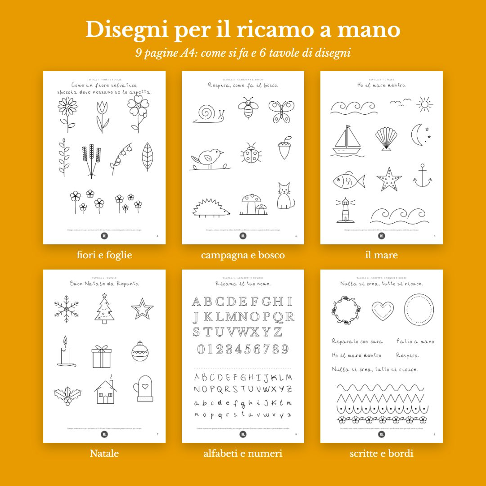

In breve. Per ricamare un disegno a mano, prima va trasferito sul tessuto. Su un tessuto chiaro e sottile il modo più semplice è ricalcarlo in controluce, appoggiandolo a una finestra o a un piano luminoso. Su un tessuto scuro o spesso (jeans, feltro, lana) conviene la carta carbone da ricamo, che lascia un segno visibile e si toglie con l'acqua o con una gomma. Esiste anche la carta idrosolubile: ci si stampa sopra il disegno, si imbastisce o incolla sul tessuto, si ricama sopra e alla fine la carta si scioglie in acqua, senza lasciare traccia. Non serve essere bravi a disegnare: si parte da un disegno già pronto.
Da dove parte un disegno da ricamare
Un buon disegno per chi comincia ha poche linee, pulite, senza troppi dettagli piccoli: un fiore con pochi petali, una foglia, un contorno di animale. I dettagli fitti (le squame di un pesce, le piume di un uccello) si affrontano quando la mano è già abituata a seguire una linea con l'ago.
Si può disegnare da soli, ricalcare una fotografia semplificandola, o partire da disegni già pensati per il ricamo, con le proporzioni giuste per un telaio piccolo. Io ne ho raccolti alcuni in un PDF pensato proprio per questo: fiori e foglie, animali di campagna, motivi di mare, un alfabeto intero da ricamare lettera per lettera. Li trovi qui.

Come si trasferisce un disegno su un tessuto chiaro: il metodo della finestra
È il metodo più vecchio, gratis, e quello che consiglio per iniziare.
- Stampa o disegna il motivo su un foglio bianco, con un tratto scuro e netto.
- Attacca il foglio al vetro di una finestra (o a un piano luminoso, se ne hai uno) con un po' di nastro adesivo, nelle ore di luce.
- Appoggia il tessuto sopra il foglio, ben teso, e fermalo ai quattro angoli con altro nastro.
- Ricalca il disegno con una matita per tessuto idrosolubile (il segno sparisce con l'acqua) o termosensibile (sparisce con il calore del ferro). Vanno bene anche una matita leggera o una penna gel chiara, se il filo del ricamo coprirà completamente il segno.
- Stacca il tessuto e controlla il disegno in piena luce prima di cominciare a cucire.
Funziona bene su cotone, lino e tessuti chiari e non troppo spessi. Su un tessuto scuro la luce non passa abbastanza: serve un altro metodo.
Su un tessuto scuro o spesso: la carta carbone da ricamo
Per jeans, feltro, lana infeltrita, pelle o ecopelle, o semplicemente un tessuto scuro, il metodo della finestra non funziona: la luce non attraversa il tessuto. Qui entra la carta carbone da ricamo (si chiama anche carta copiativa), diversa da quella per scrivere: esiste in versioni per tessuti chiari e per tessuti scuri.
- Appoggia la carta carbone sul tessuto, con il lato colorato rivolto verso il tessuto.
- Metti sopra il disegno stampato o disegnato su carta normale.
- Ferma i tre strati con qualche spillo o un po' di nastro, perché non scivolino mentre ricalchi.
- Ripassa tutti i tratti con una matita dalla punta dura, premendo con decisione.
- Solleva con cura: il disegno è passato sul tessuto, pronto da ricamare.
Il segno si toglie con una gomma o con l'acqua, a seconda del tipo di carta: controlla sempre la confezione prima di comprarla, perché non tutte si tolgono allo stesso modo.
La carta idrosolubile: quando il disegno sparisce da solo
È il metodo che uso per i miei PDF da stampare: un foglio speciale, che si può stampare con una normale stampante, si imbastisce o incolla leggermente sul tessuto, e si ricama sopra il foglio e il tessuto insieme, seguendo le linee stampate. Alla fine basta immergere il lavoro in acqua: la carta si scioglie del tutto e non resta nessun segno, nemmeno sui tessuti più delicati o scuri.
È il metodo più pulito, ma richiede comprare i fogli apposta: per un disegno ogni tanto, la finestra o la carta carbone bastano.
Quale metodo scegliere
| Metodo | Quando conviene | Cosa serve | Il segno |
|---|---|---|---|
| Finestra / luce | Tessuto chiaro e non troppo spesso | Una finestra o un piano luminoso, nastro, matita idrosolubile | Si toglie con acqua o si copre col filo |
| Carta carbone | Tessuto scuro, jeans, feltro, pelle | Carta carbone da ricamo, matita dura, spilli | Si toglie con gomma o acqua (dipende dal tipo) |
| Carta idrosolubile | Disegni fitti, tessuti delicati, risultato pulito | Fogli idrosolubili, stampante | Sparisce in acqua, nessun segno |
Come iniziare e chiudere un ricamo senza lasciare nodi
Una volta trasferito il disegno, resta una domanda pratica: come si comincia e si finisce un filo senza il nodo che si vede sul retro o, peggio, che spunta davanti? Il trucco è lasciare la coda del filo, all'inizio e alla fine, incastrata sotto i punti già fatti, invece di annodarla. Si infila l'ago sul retro, sotto due o tre punti vicini, e si tira: il filo resta fermo lo stesso, e il retro del lavoro è più piatto e pulito.
Domande frequenti
Come si trasferisce un disegno su un tessuto da ricamare?
Su un tessuto chiaro, ricalcandolo in controluce appoggiato a una finestra, con una matita idrosolubile o termosensibile. Su un tessuto scuro o spesso, con la carta carbone da ricamo. Per un risultato che sparisce del tutto, con la carta idrosolubile.
Che carta si usa per ricalcare un ricamo?
La carta carbone (o copiativa) da ricamo, diversa da quella da scrivere, esiste per tessuti chiari e per tessuti scuri. In alternativa, la carta idrosolubile, che si scioglie in acqua a fine lavoro.
Si può ricamare senza saper disegnare?
Sì: si parte da un disegno già pronto, semplice, con poche linee, e lo si trasferisce con uno dei metodi sopra. Non serve disegnare a mano libera.
Come si inizia e si chiude un ricamo senza nodo?
Si lascia la coda del filo incastrata sotto due o tre punti già cuciti, sul retro del lavoro, invece di annodarla. Il filo resta fermo e il retro resta piatto.
La carta carbone lascia il segno per sempre?
No, si toglie con una gomma o con l'acqua a seconda del tipo: è sempre scritto sulla confezione.
Ogni mese, nella mia newsletter, racconto un progetto da cucire con quello che c'è già in casa: tessuti, ritagli, vestiti che non si mettono più. Ti iscrivi qui sotto.